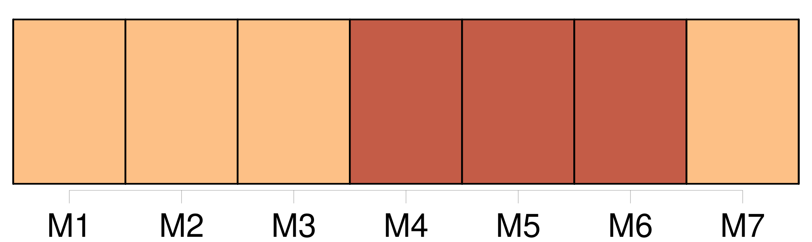
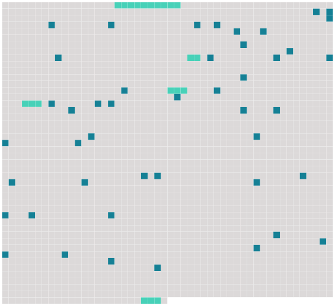

Longueur nb maillons : 50 mentions |
  |
J'étais en Normandie, chez un parent non marié, Jules de Banneville, seul avec [lui, sa bonne, un valet et un garde] dans son château seigneurial. [2 phrases] Quant à [nous] , [nous] nous étions réfugiés simplement dans la cuisine, seul coin habitable du manoir, une immense cuisine dont les lointains sombres s'éclairaient quand on jetait une bourrée nouvelle dans la vaste cheminée.
Puis, chaque soir, après une douce somnolence devant le feu, après que [nos] bottes trempées avaient fumé longtemps et que [nos] chiens d'arrêt, couchés en rond entre [nos] jambes, avaient rêvé de chasse en aboyant comme des somnambules, [nous] montions dans [notre] chambre. [1 phrases]
Mais elle était demeurée nue, blanchie seulement à la chaux, avec des fusils, dos fouets à chiens et des cors de chasse accrochés aux murs ; et nous [nous] glissions grelottants dans [nos] lits, aux deux coins de cette case sibérienne. [3 phrases]
[Nous] allions nous mettre à table devant le grand feu de la haute cheminée où rôtissaient un râble de lièvre flanqué de deux perdrix qui sentaient bon. [1 phrases] Indifférent, je répliquai : « Non, mais [nous] aurons du canard aux étangs demain matin.
»
» [7 phrases] Mon cousin se tourna vers moi : « Si tu veux, dit -il, [nous] irons tout à l'heure voir ces pauvres gens. [3 phrases] Mais je ne sais pourquoi cette idée de Noël, au fond de cette solitude, [nous] mit en humeur de causer.
[Tous les deux] , en tête-à-tête, [nous] nous racontions des histoires de réveillons anciens, des aventures de cette nuit folle, les bonnes fortunes passées et les réveils du lendemain, les réveils à deux avec leurs surprises hasardeuses, l'étonnement des découvertes. De cette façon, [notre] dîner dura longtemps.
De nombreuses pipes le suivirent ; et, envahis par ces gaîtés de solitaires, des gaîtés communicatives qui naissent soudain entre [deux intimes amis] , [nous] parlions sans repos, fouillant en [nous] pour [nous] dire ces souvenirs confidentiels du coeur qui s'échappent en ces heures d'effusion. [3 phrases] --Si [nous] allions aussi jusqu'à l'église?? [1 phrases]
» [7 phrases] --« Voici leur baraque, dit -il : [entrons] !! [1 phrases] Alors une voisine, qui sortait de chez elle pour se rendre à l'église, [nous] ayant aperçus : --« Ils sont à la messe, [messieurs] ; ils vont prier pour le père.
» [10 phrases] Jules me dit : « [Sortons] !! [on] est encore mieux dehors.
» [2 phrases] [Entrons] enfin chez ces pauvres gens, cela leur fera plaisir. [8 phrases]
A notre entrée, ils se levèrent, [nous] firent asseoir, [nous] offrirent de « faire comme eux », et, sur [notre] refus, se remirent à manger. [11 phrases]
L'homme alors, d'un air soupçonneux et sournois, demanda : --« A quoi qu'ça [vous] servirait? [4 phrases]
» Comme les petits-enfants du mort ne remuaient toujours pas, et demeuraient face à face, les yeux baissés, avec cette tête de bois des gens mécontents, qui semble dire : « [Allez] -vous -en, » mon cousin parla avec autorité : « [Allons] , Anthime, levez -vous, et conduisez [-nous] dans sa chambre. [2 phrases]
»
» [8 phrases] J'pouvions pourtant pas coucher avec ce mort, [mes bons messieurs] !! |
 |
La ressource peut être téléchargée sur la page Ortolang
Si vous avez des questions ou vous voyez des erreurs, merci d'envoyer un mail à silvia.federzoni89@gmail.com
Site développé par S. Federzoni (contact)